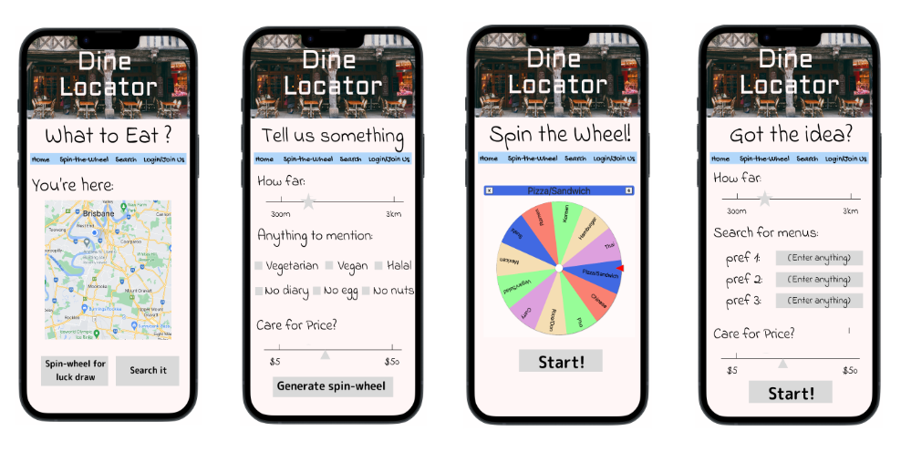
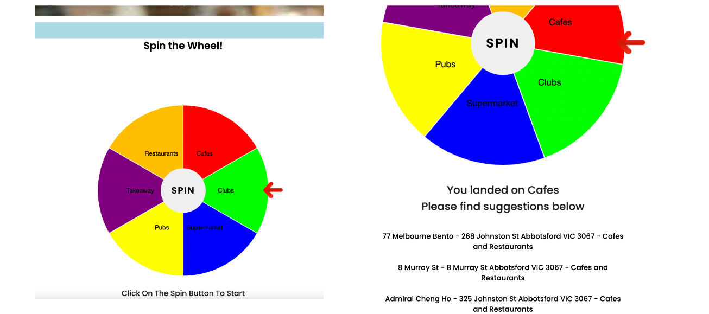
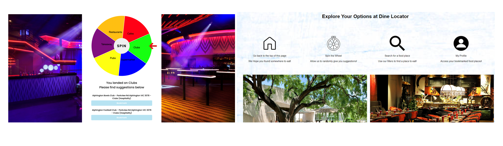

Over the course of the semester, our team went through many different phases, namely the prototype, the MVP and the final
product. Over the course of this period, we recieved a significant amount of feedback which forged our decisions.
Project 2C - Design Proposal
Task Requirements
- Design a prototype for our website
- Present it to the class in 5 minute presentaiton
- Utilise an API from any source
My Contribution
- Implemented first five slides of the presentation
- Attaining and breaking down the API/dataset for Dine Locator
- Conducted testing on personas of Dine Locator
- Determined target audience
Reflection
I feel as a team I felt we presented an effective concept, and something that was very feasible for this course.
The only critical feedback that we received after presenting was that we did not include the team roles within our group.
We felt that everyone in the group would contribute to different aspects. This was an important section of the design process
for us as a team since it allowed for the strucutre of the website to be determined. From this point forwards, it would be critical
that the implementation followed a similar structure. From this task, to project 2D, it was critical that we outlined which were the most
important aspects of the website, and how users would interact with the website.
Ideation
Producing a Dine Locator stemmed from Project 2A, and one of our team members' projects. Dine Locator itself came from the idea of
not knowing what to eat. In this case, a web app which would be able to identify food places close to their location would be incredibly
helpful. In addition, if the user genuinely had no idea, the idea of the spin-the-wheel to find random food options was a critical
aspect of our interaction process, almost a selling point of the idea.
Research
Our research came in many forms, but the predominant research we did as a team was into the ideaology of uncertainty, since Dine Locator
directly aimed to address this issue. The next section is directly taken out of our research.
"Our idea of the spin-the-wheel of our project, is inspired by and correlated to the two psychological phenomena: indecisiveness, and the emotions that a
“gacha game” could bring to us."
As discussed previously, the team decision to have the spin-the-wheel for helping make decisions was to help people who are
indecisive to make random decisions on where to eat. Our research showed that in doing this, it could likely reduce anxiety and stress
that indecisiveness can cause. Addtionally, the game itself was inspired by a "gacha game". Gacha is a Japanese word, which refers to capsule
toy vending machines.
In combination of those research areas, we felt that our Dine Locator concept was, in fact, of assistance to those who were indecisive and also
wanted to find somewhere to eat.
Prototype Design

Our original prototype included these designs. While we did make changes along the evolution of Dine Locator (as will be seen later),
the majority of these features remained consistent throughout the project.
The four pages, we as a team promoted at this stage where:
- The homepage: this would be responsible for having a map which would show the food places
- The spin-the-wheel page: as discussed, would be responsible for choosing a random food type and giving suggestions
- The search page: give the user the ability to use preferences to find a food place
- A profile page: giving the user the ability to make an account, save food places, etc (this was later changed)
Project 2D - Minimum Viable Product (MVP)
The MVP (minimum viable product) was responsible for us as a team deciding on the most critical aspect of our website and
implementing that in a manner that is functional and effective.
MVP Description
-
Our team decided that the MVP would be implementing the spin-the-wheel page. In order to do this the we had to implement
the index (homepage), which would contain a navigation bar to be able to access the spin-the-wheel page. Following this,
the spinning wheel itself would have to be implemented, before accessing the API to retrieve results based off the landing of
the spin-the-wheel.
- This would have to be presented in a manner that is engaging to the audience. Limited to 5 minutes, this would showcase our
MVP. We aimed to recieve feedback so as we could improve our final product for the final submission in week 13.
My Contribution
I was responsible for the entire coding of the MVP, this included:
-
Implementing the homepage (designing a navbar that matched the prototype, placing a map which retrieved results
from the API, linking to spin-the-wheel page)
-
Implementing a spinning wheel that randomly landed on 6 different results corresponding to the industry_desc field
of the API. Done in JavaScript.
-
Attaining results from spinning wheel, and displaying different food options corresponding to the result (i.e. Cafes)
-
Lastly, utilising CSS to make it so the spin-the-wheel was centered and the results where placed in the correct area.
In most cases, attempting to remain as close to the prototype as feasibly possible.

Reflection
The MVP presentation was met with a considerable amount of success, while we did have areas which we felt needed improvement. I felt my
contribution to this aspect of the project was beyond expectation and I was relatively happy with how the website itself was progresing.
One of the main areas of critique we recieved as a team was that the spinning wheel, while a cool idea, was not engaging and dynamic enough
for the user. Upon recieving this feedback, I did tend to agree, and hence one of my main focuses leading into the final product development
would be making it more engaging. Overall, it must be said that we as a team were happy with the direction of the website and felt with minor
improvements and the last features implemented that it would be an engaging and interactive website.
Remaining Implementation
My role, up until this point, had been coding the website and this was not expected to change coming into the final submission of this project.
Areas which still required to be implemented at this point were:
- Detailed search page, allowing users to search based off preferences,
- Profile page, allowing the user to make a profile and bookmark food places,
- Overall graphics of the website need to be improved, and
- Possibly change the way the results are presented on the spinning wheel page.
Additionally, any feedback we recieved along the journey, would be considered, and in most cases, implemented.
Project 2E - Final Product and Tradeshow
This final project of the semester presented an incredible opportunity to develop the website to its full potential and present it
to a group of people who would get to interact with the website.
Deliverables
- Completed web application
- Design report
- Trade show presentation
My Contribution
Like with the MVP, I was responsible for the entire implementation of the website. Contributions I made were:
-
Altering the spin-the-wheel page so every result that was displayed had a corresponding bookmark button.
If this button was clicked, that food place would be added to localStorage and hence accessed later. This was done
through JavaScript.
-
Implementing bookmarks on the website as part of the My Profile page. As mentioned, if food places were bookmarked
they would be saved to localStorage. Upon this, the My Profile page would access these and display them. Additionally,
a remove button was added which allowed entries to be deleted from localStorage.
-
Implemented the search page function of Dine Locator. This page was designed so users could have a set of preferences
and based off these, results would be shown from the API.
-
Changes were made to the homepage, which gave it an additional menu below the map by clicking 'explore'
-
Changes were made from the spin-the-wheel page based off user feedback. This included having custom backgrounds for when
the user lands on results. For example, if the user landed on restaurants, a blurred image of a restaurant would be the background
upon landing. In addition to this, sound effects were added for when the user clicks spin, and when the user lands on a result.
-
I also contributed towards the report for this submission by doing the process section.
Tradeshow

Tradeshow explanation
Reflection
Overall, Dine Locator has been very successful in achieving what we aimed to achieve. From my perspective, my main role within the
team, besides for being team leader, was to implement the coding and I am happy with what I have achieved. I felt that the feedback we
recieved from tutors over the majority of the course has really assisted me with making critical decisions when it came to the website.
The main changes that I made were with regards to the profile page. Originally, our prototype and MVP had a goal of making a login/join us
page which would have allowed for multiple users. Ultimately, we felt as a team that this was not necessary since the primary function of
this page was to bookmark food places and this could be achieved in a much simpler manner. Additionally, the search page unfortunately had
to be limited to just two search preferences since the dataset was limited in ways.
This final product was a pleasure to be apart of and I am very pleased with how our team operated. The tradeshow was a success and this is
testament to the hard work that our team put in over the culminating weeks of the semester.
Final Product UI Decisions

As discussed, there were changes that were made as a result of feedback we recieved after the MVP. These are shown in the above images.